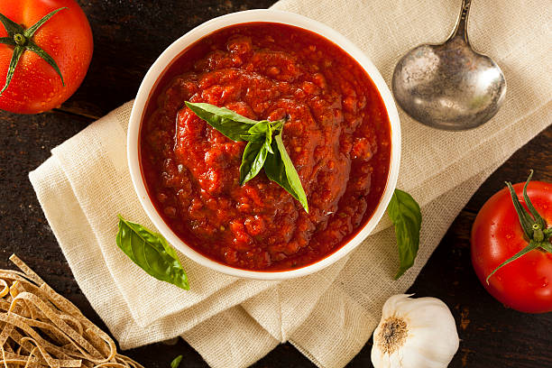

The Creamiest Pasta Sauce You'll Ever Cream!

Description
This pasta sauce is so watery yet creamy it's an impossible texture. So weird you might puke, but I guess it's good...
Ingredients
- pre-made pasta sauce
- water
- half and half
Steps
- First, pour all the pre-made pasta sauce into a big pot.
- Next, boil all the water you want to use.
- Then, pour both the boiling water and the half and half carton into the pasta sauce.
- Lastly, boil it then serve!